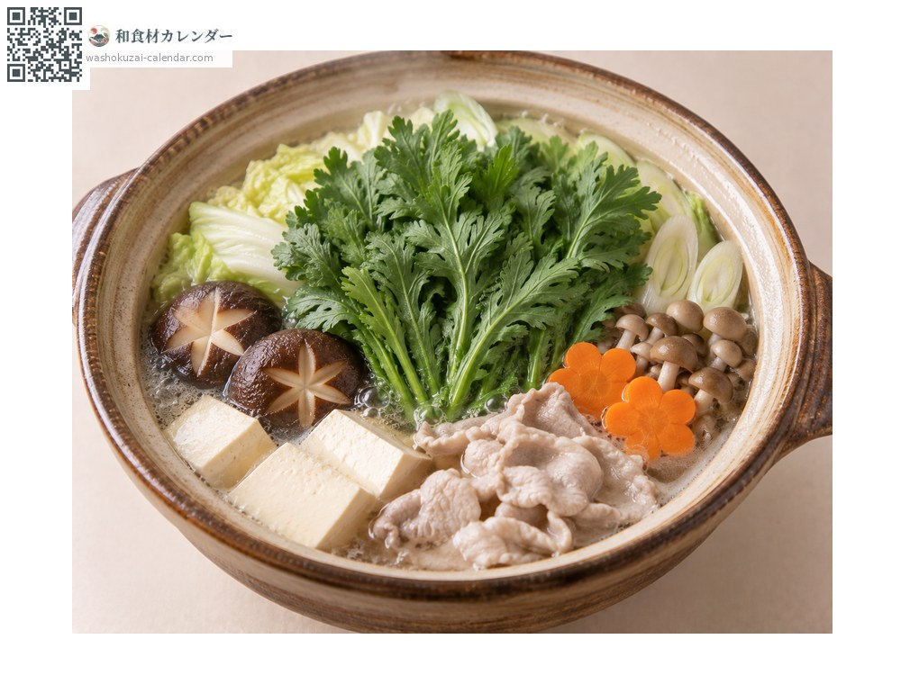
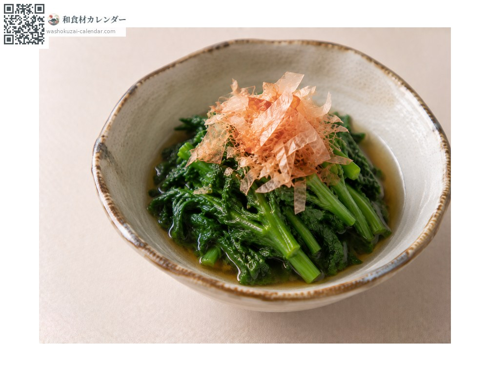
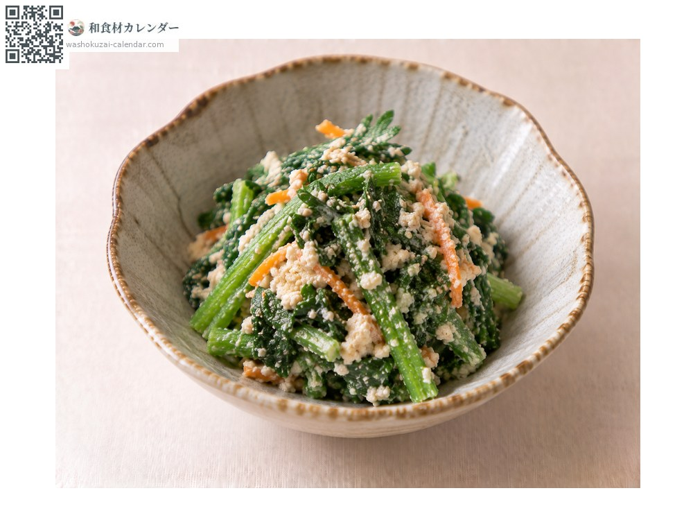
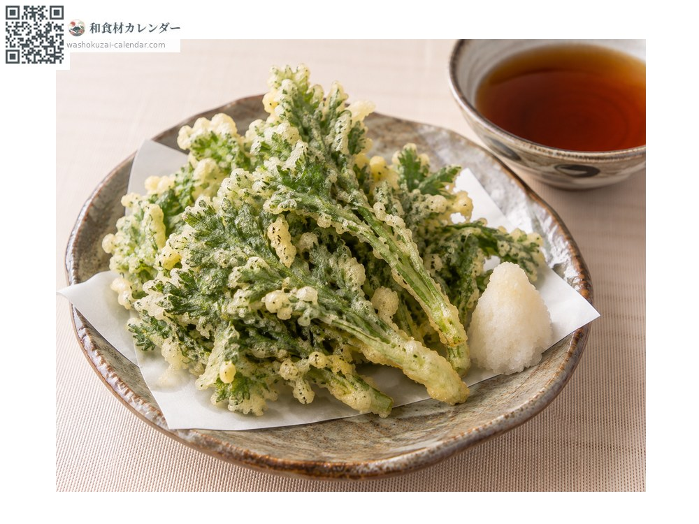

Vegetables
Shungiku
シュンギク しゅんぎく shungiku
Also known asshungiku
At its best in Jan, Feb, Nov, Dec

When it is at its best
Jan
Feb
Mar
Apr
May
Jun
Jul
Aug
Sep
Oct
Nov
Dec
In seasonAvailable
How to cook

Nabe (hot pot)
For sukiyaki and hot pots.

Ohitashi (blanched greens in dashi)
Blanched briefly.

Shira-ae (dressed with mashed tofu)
Dressed with mashed tofu.

Tempura
Brings out the aroma.
How to choose
Deep green leaves growing densely, a strong aroma, and slim tender stems.
Storage
Wrap in damp newspaper and refrigerate. Sensitive to drying, and the aroma fades easily.
Main areas
Good to know
Known as kikuna in Kansai. Overcooking drives off the aroma, so add it last to a hot pot.